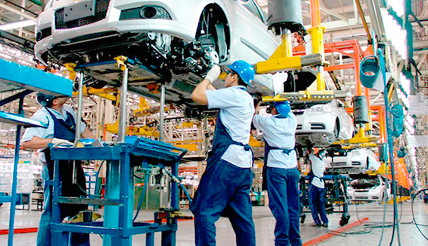

15 conceptos básicos para entender la Industria 4.0

Por:Ánonimo
Fecha: Febrero de 2018
Hablar de futuro en Industria 4.0 ya no tiene demasiado sentido… Hay que hablar de presente de la Industria 4.0. La mayoría de los que nos movemos en este entorno hemos integrado en nuestro día a día numerosos conceptos y funcionalidades que hace tan solo un par de años parecían ‘ciencia ficción’ pero que hoy forman parte de nuestro trabajo cotidiano.
Para conocer mejor la transformación digital inminente en la que nos encontramos hemos recopilado un diccionario básico con los conceptos fundamentales para entender qué supone la cuarta revolución industrial:
Leer más
10 comentarios
¿Preparados para la cuarta Revolución Industrial?

Por:Seresco
Fecha: Noviembre de 2016
Mucha gente nos pregunta sorprendida e incluso incrédula, ¿qué es eso de la digitalización industrial? ¿Cómo que estamos ante la 4ª Revolución Industrial?
Para empezar a entender los avances que trae consigo la 4ª Revolución Industrial, podemos empezar haciendo un repaso a través de la Historia para darnos cuenta que vivimos en un constante cambio. El ser humano ha tenido que ir adaptándose a toda clase de cambios económicos, políticos, climáticos, tecnológicos,…. Para que esas adaptaciones sean posibles hemos ido consiguiendo pequeños o grandes avances que han ido cambiando el mundo.
Leer más
12 comentarios
Tecnología que usamos en la Industria 4.0

Por:3R Industria 4.0
Fecha: Octubre de 2018
La industria 4.0 utiliza un conjunto de tecnologías clave que posibilitan el concepto de un nuevo modelo industrial. El IoT es lo más nombrado por lo expertos, aunque no es lo único, veamos una pequeña introducción de las Tecnologías AR (realidad aumentada), VR (realidad virtual), los Wearables y los Beacons aplicados al sector industrial.
Leer más
5 comentarios
Automatización de procesos: qué es, cómo hacerla bien y beneficios

Por:Virginie Roussillon
Fecha: Diciembre de 2020
En un entorno competitivo y con incertidumbre, la búsqueda de reducción de costes y precios para asegurar el beneficio y la rentabilidad se convierten en una exigencia. La automatización de procesos es uno de los grandes reductores de costes, pero antes de incorporar nuevas tecnologías es importante tener una visión de conjunto que nos ayude a entender lo que está ocurriendo en nuestra organización
Leer más
20 comentarios